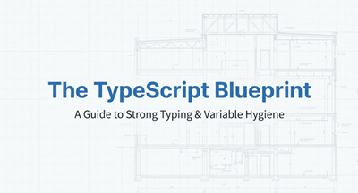
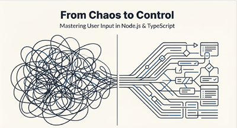
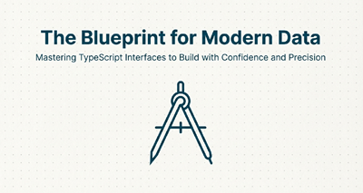
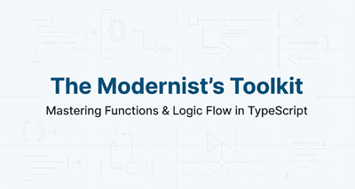
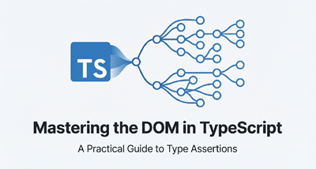
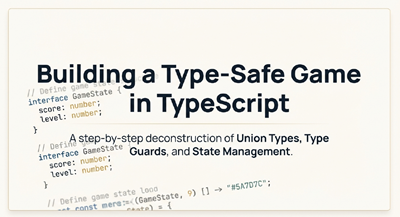
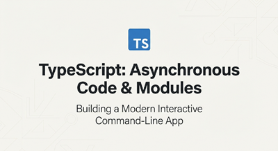

TypeScript Quick Guides
Comprehensive Reference for TypeScript Development
Quick Reference Guides
📘 TypeScript vs JavaScript
Understand the key differences between TypeScript and JavaScript, types, and when to use each
Video Slide Presentations

The TypeScript Blueprint
A Guide to Strong Typing & Variable Hygiene
📄 PDF Slides
▶️ YouTube Video

From Chaos to Control
Mastering User Input in Node.js & TypeScript
📄 PDF Slides
▶️ YouTube Video

The Blueprint for Modern Data
Mastering TypeScript Interfaces to Build with Confidence and Precision
📄 PDF Slides
▶️ YouTube Video

The Modernist's Toolkit
Mastering Functions & Logic Flow in TypeScript
📄 PDF Slides
▶️ YouTube Video

Mastering the DOM in TypeScript
A Practical Guide to Type Assertions
📄 PDF Slides
▶️ YouTube Video

Building a Type-Safe Game in TypeScript
A step-by-step deconstruction of Union Types, Type Guards, and State Management
📄 PDF Slides
▶️ YouTube Video

TypeScript: Asynchronous Code & Modules
Building a Modern Interactive Command-Line App
📄 PDF Slides
▶️ YouTube Video